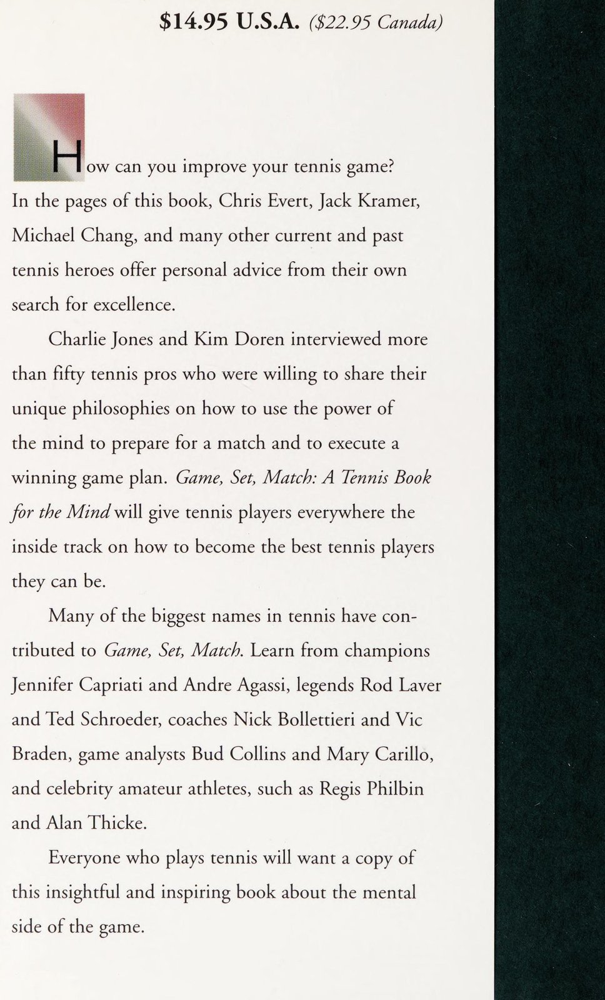
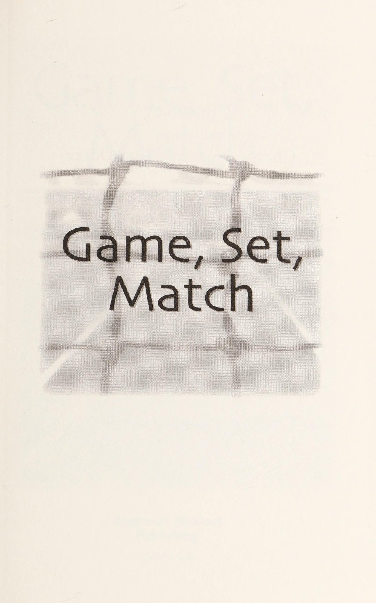
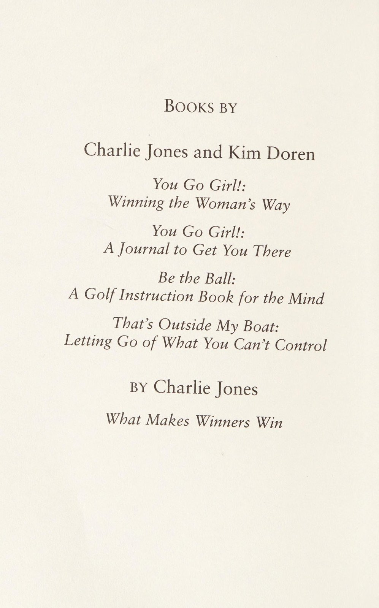
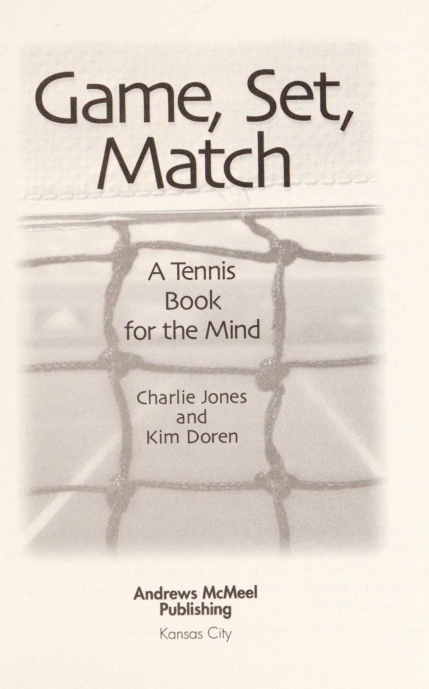

Phần 1: Trò Chơi Tâm Trí Của Các Huyền Thoại Quần Vợt
Cuốn sách Game, Set, Match: Winning the Mental Game of Tennis của hai tác giả Charlie Jones và Kim Doren là một tuyển tập tinh hoa độc nhất vô nhị, đúc kết những chia sẻ sâu sắc và chân thực nhất từ các huyền thoại hàng đầu thế giới: Venus Williams, Chris Evert, Jack Kramer, Rod Laver, Michael Chang, Stan Smith và Todd Martin. Quần vợt là một môn thể thao cá nhân nghiệt ngã: Khi bạn bước qua cánh cổng vào sân, bạn hoàn toàn cô độc. Không có đồng đội để chuyền bóng, không có thời gian hội ý để huấn luyện viên nhắc bài, chỉ có bạn đối đầu trực diện với đối thủ và những cuộc đấu tranh dữ dội diễn ra bên trong tâm trí.
Phần này khám phá khái niệm bản lĩnh nhà vô địch, triết lý kiểm soát những điều nằm trong tầm tay và nghệ thuật chuyển hóa nỗi sợ hãi thành sức mạnh chiến đấu phi thường.
1. Bản Lĩnh Nhà Vô Địch (The Champion's Mindset)
Huyền thoại Venus Williams từng khẳng định: "Những nhà vô địch vĩ đại sở hữu một trạng thái tâm trí hoàn toàn khác biệt so với phần còn lại của thế giới."
- Sự Tự Tin Không Lay Chuyển: Các nhà vô địch không chờ đợi đến khi họ thi đấu hoàn hảo mới cảm thấy tự tin. Sự tự tin của họ bắt nguồn từ hàng nghìn giờ khổ luyện trong thầm lặng, và niềm tin tuyệt đối rằng họ luôn có giải pháp để vượt qua nghịch cảnh.
- Khả Năng Chấp Nhận Thực Tế: Trong một trận đấu kéo dài, không ai có thể tung ra những cú đánh hoàn hảo ở mọi pha bóng. Nhà vô địch là người biết cách chấp nhận những pha bóng vụng về, không bực bội tự dằn vặt bản thân, và lập tức tập trung toàn bộ năng lượng vào điểm số tiếp theo.
- Sự Độc Lập Kiên Cường: Thể thao cá nhân đòi hỏi một ý chí tự chịu trách nhiệm 100%. Mọi sai lầm đều thuộc về bạn, nhưng mọi vinh quang cũng do chính bạn tạo nên.

2. Kiểm Soát Những Gì Nằm Trong Tầm Tay (Control the Controllables)
Một trong những bài học đắt giá nhất của tác phẩm là nguyên tắc buông bỏ những yếu tố ngoại cảnh:
Khi bạn ngừng phàn nàn về những điều ngoài tầm với, tâm trí bạn sẽ được giải phóng khỏi sự bực bội và có thể vận hành ở trạng thái tĩnh lặng nhất.
3. Chuyển Hóa Nỗi Sợ Hãi Thành Năng Lượng Hành Động (Facing Fear)
Ngay cả những tay vợt số một thế giới cũng trải qua cảm giác bồn chồn lo lắng trước những trận chung kết lớn:
- Nỗi Sợ Thất Bại Là Bản Năng Tự Nhiên: Sự căng thẳng không phải là dấu hiệu của sự yếu đuối; đó là tín hiệu cho thấy cơ thể bạn đang chuẩn bị bước vào cuộc chiến sinh tồn.
- Hành Động Để Xua Tan Lo Âu: Khi cảm thấy cánh tay bị co cứng vì sợ hãi, hãy chủ động tăng tốc độ đôi chân, thở ra thật sâu khi đánh bóng và nhắm vào các mục tiêu lớn ở giữa sân để tái lập cảm giác bóng.
Phần 2: Đấu Trí & Nghệ Thuật Hóa Giải Áp Lực Dưới Sức Ép Nghẹt Thở
Trên sân đấu đỉnh cao, sự chênh lệch về kỹ thuật giữa hai tay vợt thường chỉ là vài phần trăm nhỏ bé. Yếu tố thực sự quyết định chiếc cúp vô địch nằm ở khả năng đối đầu với những đòn tâm lý chiến (head games) và bản lĩnh thi đấu tại các thời khắc sinh tử: Break point, Tie-break hay Match point.
Phần này phân tích các thủ thuật tâm lý thường gặp của đối thủ, bí quyết làm chủ các điểm số then chốt và những bài học kinh nghiệm vô giá từ hai huyền thoại Rod Laver và Michael Chang.
1. Vô Hiệu Hóa Các Đòn Tâm Lý Chiến Của Đối Thủ (Countering Head Games)
Nhiều đối thủ cố tình sử dụng các tiểu xảo ngoài chuyên môn (gamesmanship) để làm bạn mất bình tĩnh:
- Chiêu Trò Trì Hoãn Nhịp Độ Trận Đấu: Khi bạn đang chơi hưng phấn và liên tục ghi điểm, đối thủ có thể giả vờ buộc lại dây giày, lau mồ hôi thật chậm hoặc xin tạm dừng y tế để cắt đứt nhịp thăng hoa của bạn. Cách đối phó là: Tuyệt đối không đứng bực bội nhìn đối thủ; hãy quay lưng lại, đi bộ nhẹ nhàng phía sau vạch cuối sân và tập trung vào nhịp thở của chính mình.
- Chiêu Trò Khiêu Khích & Bắt Bóng Gian Lận: Đừng bao giờ lao vào những cuộc cãi vã vô bổ khiến nhịp tim tăng vọt. Hãy mỉm cười lạnh lùng, yêu cầu ban tổ chức cử giám sát viên ra sân và đáp trả bằng những đường bóng sâu và chính xác hơn ở các pha bóng sau.
2. Bài Học Của Michael Chang: Tập Trung Vào Điều Đang Diễn Ra Tốt Đẹp
Nhà vô địch Roland Garros trẻ nhất lịch sử Michael Chang chia sẻ bí quyết then chốt để lật ngược thế cờ khi đang bị dẫn trước:
Nếu bạn chỉ dán mắt vào những cú đánh hỏng và liên tục tự trách mình, bạn đang tự thôi miên não bộ để tiếp tục phạm phải những sai lầm tương tự.
3. Bản Lĩnh Điểm Then Chốt Của Huyền Thoại Rod Laver
Tay vợt duy nhất hai lần thâu tóm trọn vẹn cả 4 danh hiệu Grand Slam trong cùng một năm (Calendar Grand Slam) Rod Laver nổi tiếng với sự điềm đạm tuyệt đối dưới áp lực:
- Làm Chậm Nhịp Độ Khi Hồi Hộp: Khi nhịp tim bắt đầu đập thình thịch trước điểm Break point, Rod Laver luôn bước đi thong thả hơn, lau tay vào khăn và hít thở sâu từ cơ hoành để đưa cơ thể trở lại trạng thái thư giãn sinh học.
- Chơi Đúng Với Bản Năng Sở Trường: Tại các điểm số quyết định của trận đấu, đừng bao giờ thử nghiệm một cú đánh mạo hiểm mà bạn chưa từng tập luyện kỹ lưỡng. Hãy tin tưởng tuyệt đối vào cú đánh đáng tin cậy nhất trong kho vũ khí của bạn.
Phần 3: Sự Tập Trung Cao Độ, Quy Trình Chuẩn Bị & Sức Mạnh Của Trái Tim
Một trận đấu quần vợt căng thẳng có thể kéo dài suốt 3 đến 5 giờ đồng hồ dưới cái nắng gay gắt. Để duy trì một mức độ tập trung sắc bén qua hàng trăm pha bóng liên tiếp mà không bị kiệt quệ thần kinh đòi hỏi một phương pháp kỷ luật tinh thần chặt chẽ. Hơn thế nữa, các nhà vô địch lớn luôn hiểu rằng sức mạnh cơ bắp chỉ là một nửa câu chuyện; nửa còn lại được định đoạt bởi sự tinh tế và ý chí sắt đá của trái tim.
Phần này phân tích kỹ năng neo giữ sự chú ý, quy trình chuẩn bị thể chất và tinh thần trước trận đấu, cùng triết lý chiến thắng bằng trái tim của hai ngôi sao Stan Smith và Todd Martin.
1. Nghệ Thuật Duy Trì Sự Tập Trung Bền Bỉ (Sustained Focus)
Sự tập trung của con người không phải là một chiếc đèn pha có thể chiếu sáng liên tục suốt nhiều giờ mà không bị nóng. Các tay vợt vĩ đại sử dụng cơ chế bật - tắt tập trung nhịp nhàng:
- Bật Tập Trung Trong Pha Bóng: Khóa chặt toàn bộ tầm nhìn vào quả bóng ngay khi đối thủ chuẩn bị tung bóng giao bóng hoặc chuẩn bị chạm bóng. Lúc này, cả thế giới xung quanh hoàn toàn biến mất.
- Tắt Tập Trung Khi Pha Bóng Kết Thúc: Ngay khi bóng ngừng lăn, lập tức thả lỏng tâm trí trong 10 đến 15 giây. Nhìn vào một điểm cố định (dây vợt hoặc đỉnh hàng rào), hít thở sâu để não bộ được nghỉ ngơi tích lũy năng lượng cho pha bóng kế tiếp.
- Loại Bỏ Những Tạp Âm Của Khán Giả: Tiếng la hét của người hâm mộ hay tiếng ồn xung quanh không thể làm tổn thương bạn nếu bạn xem chúng như những âm thanh vô hại của tự nhiên như tiếng gió thổi hay tiếng mưa rơi.

2. Chuẩn Bị Kỹ Lưỡng Tạo Nêu Bản Lĩnh (Pre-Match Preparation)
Sự tự tin vững chắc trước khi bước ra sân được xây dựng từ quy trình chuẩn bị chi tiết và chuyên nghiệp:
1. Chuẩn Bị Trang Thiết Bị Tối Ưu: Quần áo, giày thi đấu vừa vặn, tối thiểu 3 đến 4 cây vợt được căng dây chuẩn xác theo điều kiện thời tiết trong ngày.
2. Khởi Động Thể Lực & Tinh Thần: Làm ấm cơ bắp toàn diện trong 20 phút và dành 10 phút ngồi yên tĩnh để hình dung trong đầu các tình huống chiến thuật cơ bản.
3. Không Để Bất Ngờ Chi Phối: Tìm hiểu kỹ lối chơi, tay thuận và điểm mạnh điểm yếu của đối thủ trước khi bước vào sân thi đấu.

3. Sức Mạnh Cơ Bắp So Với Ý Chí Của Trái Tim (Power vs Heart)
Ngôi sao Todd Martin (từng lọt vào top 4 thế giới và giành giải thưởng Comeback Player of the Year) chia sẻ trải nghiệm sâu sắc về bản chất của chiến thắng:
- Kỹ Thuật Đưa Bạn Vào Bán Kết, Trái Tim Đưa Bạn Vô Địch: Sức mạnh bộc phát và những cú đánh đại bác có thể giúp bạn áp đảo những vòng đầu tiên. Nhưng khi bước vào trận chung kết đối đầu với một đối thủ ngang tài ngang sức, người chiến thắng sau cùng là người có ý chí chiến đấu ngoan cường hơn, sẵn sàng chịu đựng đau đớn và không bao giờ đầu hàng.
- Nghệ Thuật Chiến Thắng Khi Phong Độ Tồi Tệ (Winning Ugly): Sẽ có những ngày bạn thức dậy và cảm thấy cú thuận tay hay cú giao bóng của mình hoàn toàn mất cảm giác. Một tay vợt tầm thường sẽ buông xuôi và đổ lỗi cho số phận. Một chiến binh thực thụ sẽ cắn răng chiến đấu, sử dụng những đường bóng đơn giản nhất để lội ngược dòng và giành chiến thắng ngay cả trong ngày tồi tệ nhất của mình.
Phần 4: Tinh Thần Thể Thao Đích Thực & Ý Nghĩa Cuộc Đời Từ Quần Vợt
Khi khép lại cuốn sách Game, Set, Match, Charlie Jones và Kim Doren đưa người đọc trở về với giá trị cốt lõi và cao quý nhất của thể thao: Tinh thần thể thao chân chính (sportsmanship). Chiến thắng là một phần thưởng tuyệt vời, nhưng một chiến thắng đạt được bằng sự gian lận hay hành vi phi thể thao sẽ chỉ là một chiếc cúp rỗng tuếch không có giá trị. Các huyền thoại như Chris Evert và Jack Kramer đã chứng minh rằng phong thái đĩnh đạc và lòng tự trọng trên sân đấu mới là thứ trường tồn mãi mãi trong lòng người hâm mộ.
Phần kết này khám phá tinh thần mã thượng trong thi đấu đỉnh cao, nghệ thuật học hỏi từ những thất bại đắng cay và bài học nhân sinh sâu sắc mà môn thể thao quần vợt trao tặng cho mỗi chúng ta.
1. Tinh Thần Thể Thao Cao Thượng (True Sportsmanship)
Huyền thoại Chris Evert (chủ nhân 18 danh hiệu Grand Slam đơn) luôn được ngưỡng mộ bởi phong thái điềm tĩnh và sự lịch thiệp tuyệt đối trên sân đấu:
- Tôn Trọng Đối Thủ Tuyệt Đối: Hãy nhớ rằng không có đối thủ tài năng ở bên kia lưới, bạn sẽ không bao giờ có cơ hội thể hiện hết bản lĩnh và tiềm năng của chính mình. Đối thủ chính là người bạn đồng hành khắt khe nhất giúp bạn hoàn thiện bản thân.
- Sự Điềm Tĩnh Trong Giông Bão: Không ném vợt, không phàn nàn thô bạo, không biện minh sau thất bại. Một nhà vô địch chân chính luôn thể hiện sự khiêm nhường trong chiến thắng và sự đĩnh đạc cao thượng trong thất bại.
- Trung Thực Với Từng Đường Bóng: Bắt bóng công tâm và tôn trọng quyết định của trọng tài là nền tảng danh dự của một vận động viên thể thao chân chính.

2. Thất Bại Là Người Thầy Vĩ Đại Nhất (Learning from Defeat)
Không có bất kỳ huyền thoại nào trong lịch sử quần vợt bất bại suốt cả sự nghiệp. Thất bại là một phần tất yếu của quá trình tiến bộ:
- Không Để Thất Bại Định Nghĩa Con Người Bạn: Thua một trận đấu chỉ đơn giản có nghĩa là bạn đã chơi chưa tốt ở một vài pha bóng cụ thể trong ngày hôm đó; nó không có nghĩa bạn là một kẻ thất bại trong cuộc đời.
- Rút Ra Bài Học Thay Vì Tự Dằn Vặt: Hãy ngồi lại cùng huấn luyện viên sau trận đấu, phân tích khách quan những tình huống xử lý lỗi, ghi nhận những điểm yếu chiến thuật và biến chúng thành mục tiêu rèn luyện cho buổi tập sáng hôm sau.
3. Quần Vợt: Tấm Gương Phản Chiếu Cuộc Đời
Quần vợt là một trường học tuyệt vời của cuộc sống:
- Khả Năng Vượt Qua Thử Thách: Trong cuộc sống cũng như trên sân quần vợt, bạn sẽ liên tục gặp phải những tình huống bất ngờ nằm ngoài dự tính. Kẻ thành công là người biết thích nghi nhanh chóng, giữ vững niềm tin và không bao giờ bỏ cuộc.
- Tận Hưởng Từng Khoảnh Khắc: Sau tất cả, niềm hạnh phúc lớn nhất không phải là lúc nâng cao chiếc cúp, mà là từng giọt mồ hôi rơi xuống sân, nhịp đập rộn ràng của con tim và niềm vui thuần khiết khi được cầm cây vợt bước ra ánh nắng cùng những người bạn tri kỷ.